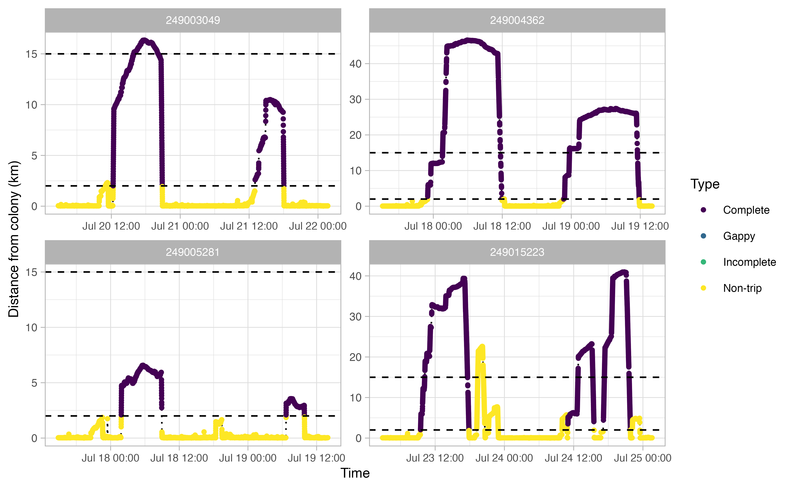

OPP workflow
A step-by-step tutorial on visualizing seabird foraging trips and key at-sea areas.
OPP-workflow.RmdThis package contains analysis tools for processing seabird tracking data collected under Canada’s Oceans Protection Plan. The workflow aims to identify at-sea trips for central place foraging seabirds, then use those trips to estimate key areas of use while the birds are at sea. Key areas are estimated using two approaches: a traditional kernel density estimation and a Brownian Bridge Movement Model (BBMM) based kernel density estimation.
The core of this package is built around the existing R package
track2KBA, and further documentation on
track2KBA methodology can be found in Lascelles
et al. 2016.
Installation
The OPPtools package can be downloaded and installed
from Github if you have previously downloaded the devtools
package. The second package you will need for this workflow is
track2KBA, which is available for download from CRAN.
# Install OPPtools
# install.packages("devtools")
devtools::install_github('popovs/OPPtools')
library(OPPtools)Data preparation
The workflow in this package is designed to work smoothly with data
stored on Movebank. In order to download data, you will need to provide
your Movebank credentials. OPPtools has an optional
convenience function, opp_movebank_key, that allows you to
securely store an encrypted copy of your Movebank credentials. If you
set your credentials this way, you will not be prompted to enter your
Movebank credentials further by any future function calls.
opp_movebank_key(username = "my_movebank_username") # You will then be prompted to enter your passwordWe can then download data directly off of Movebank. If you stored
your credentials using opp_movebank_key, the data will be
downloaded directly. Otherwise, you will be prompted to enter your
Movebank username and password in the console.
murres <- opp_download_data(248994009)In these examples, data for thick-billed murres from Coats Island are also already bundled with the package.
| timestamp | location_long | location_lat | sensor_type | local_identifier | ring_id | taxon_canonical_name | sex | animal_life_stage | animal_reproductive_condition | number_of_events | study_site | deploy_on_longitude | deploy_on_latitude | deployment_id | tag_id | individual_id | year | month | season |
|---|---|---|---|---|---|---|---|---|---|---|---|---|---|---|---|---|---|---|---|
| 2010-07-23 03:01:22 | -82.01563 | 62.94722 | GPS | 118600227 | NA | Uria lomvia | u | Adult | Chicks | 2034 | Coats | -82.0157 | 62.9477 | 248997568 | 248996949 | 248996948 | 2010 | 7 | NA |
| 2010-07-23 03:03:52 | -82.01509 | 62.94721 | GPS | 118600227 | NA | Uria lomvia | u | Adult | Chicks | 2034 | Coats | -82.0157 | 62.9477 | 248997568 | 248996949 | 248996948 | 2010 | 7 | NA |
| 2010-07-23 03:05:54 | -82.01595 | 62.94711 | GPS | 118600227 | NA | Uria lomvia | u | Adult | Chicks | 2034 | Coats | -82.0157 | 62.9477 | 248997568 | 248996949 | 248996948 | 2010 | 7 | NA |
| 2010-07-23 03:07:55 | -82.01580 | 62.94714 | GPS | 118600227 | NA | Uria lomvia | u | Adult | Chicks | 2034 | Coats | -82.0157 | 62.9477 | 248997568 | 248996949 | 248996948 | 2010 | 7 | NA |
| 2010-07-23 03:09:56 | -82.01556 | 62.94723 | GPS | 118600227 | NA | Uria lomvia | u | Adult | Chicks | 2034 | Coats | -82.0157 | 62.9477 | 248997568 | 248996949 | 248996948 | 2010 | 7 | NA |
| 2010-07-23 03:11:57 | -82.01621 | 62.94722 | GPS | 118600227 | NA | Uria lomvia | u | Adult | Chicks | 2034 | Coats | -82.0157 | 62.9477 | 248997568 | 248996949 | 248996948 | 2010 | 7 | NA |
Explore raw tracks
The opp_map function allows you to quickly plot up your
raw Movebank tracks to visualize them. The orange dot represents the
Movebank project site, which in the case of our seabirds is the same as
the colony location.
opp_map(murres)
Another useful thing to examine prior to continuing the workflow is a simple plot of time traveled vs. distance from colony for each bird. Looking at this will allow you to make informed decisions on minimum and maximum distances traveled during individual foraging trips in addition to time elapsed during foraging trips.
opp_explore_trips(murres)


Define trips
From the above track exploration, we can extract reasonable trip
parameters for the next stage of the workflow: the
opp_get_trips function. It seems that most trips are
characterized by a minimum distance of at least 2 km away from the
colony. Additionally, a distance of 15 km seems reasonable to capture
any trips where the bird went offshore but the logger than died (i.e.,
incomplete trips). This 15 km value will be used by
opp_get_trips to mark any incomplete trips. Finally, based
on these plots, it looks like we want to filter out any tracks that
spend less than 2 hours away from the colony. In short, we’re saying
that any tracks that achieve of a distance of >2 km away from the
colony for at least 2 hours can qualify as a ‘trip’.
We also need to trim down the data using the opp2KBA
function.
innerBuff = 2 # (km) minimum distance from the colony to be in a trip
returnBuff = 15 # (km) outer buffer to capture incomplete return trips
duration = 2 # (hrs) minimum trip duration
murres <- opp2KBA(murres)Extract trips
The opp_get_trips function will return a
SpatialPointsDataFrame containing the GPS track locations for each bird,
grouped by a trip ID. It will also label all GPS points deemed not to be
part of a trip. If showPlots = TRUE (the default), plots
visualizing the trips will be output.
trips <- opp_get_trips(murres,
innerBuff = innerBuff,
returnBuff = returnBuff,
duration = duration)
Interpolate tracks
One of the primary end-data products of this workflow is a kernel
density estimate of seabird space use. However, a key statistical
assumption of kernel densities is an even sampling regime. In the case
of GPS points, this would mean an even gap of time between each data
point. The current data do not satisfy this assumption. To account for
this, we must first interpolate the data. The OPPTools library
uses the crawl interpolation method to do so. See
?ctcrw_interpolation for more information.
The output plots for ctcrw_interpolation are similar to
the ones above, except for the addition of green circles. The green
circles indicate interpolated tracks. The function only interpolated
tracks identified as “Complete” by opp_get_trips above.
This can be adjusted with the type argument in the
function.
interp <- ctcrw_interpolation(trips,
site = murres$site,
type = "Complete",
timestep = "2 min")


Summmarizing our trips
OPPtools comes with a function to quickly explore trip
details. It accepts the output from either opp_get_trips or
ctcrw_interpolation. If you run sum_trips on
an interpolated output, the table will provide both the raw and
interpolated number of GPS locations.
| ID | tripID | n_locs | departure | return | duration | max_dist_km | complete |
|---|---|---|---|---|---|---|---|
| 248997568 | 248997568_01 | 396 | 2010-07-23 11:16:45 | 2010-07-23 20:01:38 | 8.748056 | 29.986898 | Complete |
| 248997568 | 248997568_02 | 134 | 2010-07-23 20:33:43 | 2010-07-24 00:05:24 | 3.528056 | 9.542494 | Complete |
| 248997568 | 248997568_03 | 461 | 2010-07-24 10:58:34 | 2010-07-24 18:09:25 | 7.180833 | 42.128795 | Complete |
| 248997568 | 248997568_04 | 256 | 2010-07-24 18:30:40 | 2010-07-25 00:09:01 | 5.639167 | 24.637422 | Complete |
| 248998556 | 248998556_01 | 105 | 2010-08-01 03:41:51 | 2010-08-01 07:30:06 | 3.804167 | 7.610807 | Complete |
| 249000360 | 249000360_01 | 134 | 2010-08-01 02:13:10 | 2010-08-01 07:51:58 | 5.646667 | 18.071389 | Complete |
| 249000360 | 249000360_02 | 91 | 2010-08-01 08:32:54 | 2010-08-01 12:23:05 | 3.836389 | 21.014849 | Complete |
| 249001782 | 249001782_01 | 330 | 2010-07-20 13:25:55 | 2010-07-20 23:15:56 | 9.833611 | 17.521209 | Complete |
| 249001782 | 249001782_02 | 96 | 2010-07-21 13:02:54 | 2010-07-21 16:23:01 | 3.335278 | 7.799777 | Complete |
| 249001782 | 249001782_03 | 169 | 2010-07-21 16:43:08 | 2010-07-21 23:05:49 | 6.378056 | 5.248500 | Complete |
| 249003049 | 249003049_01 | 291 | 2010-07-20 12:18:47 | 2010-07-20 20:52:08 | 8.555833 | 16.355226 | Complete |
| 249003049 | 249003049_02 | 152 | 2010-07-21 13:02:46 | 2010-07-21 18:03:08 | 5.006111 | 10.493765 | Complete |
| 249004362 | 249004362_01 | 564 | 2010-07-17 23:01:45 | 2010-07-18 11:55:37 | 12.897778 | 46.608719 | Complete |
| 249004362 | 249004362_02 | 492 | 2010-07-18 22:40:41 | 2010-07-19 11:49:03 | 13.139444 | 27.418362 | Complete |
| 249005281 | 249005281_01 | 212 | 2010-07-18 01:51:51 | 2010-07-18 08:55:54 | 7.067500 | 6.577034 | Complete |
| 249005281 | 249005281_02 | 95 | 2010-07-19 06:40:12 | 2010-07-19 09:51:47 | 3.193056 | 3.552202 | Complete |
| 249015223 | 249015223_01 | 549 | 2010-07-23 09:27:58 | 2010-07-23 17:51:11 | 8.386944 | 39.400588 | Complete |
| 249015223 | 249015223_02 | 228 | 2010-07-24 11:00:23 | 2010-07-24 15:30:05 | 4.495000 | 23.248707 | Complete |
| 249015223 | 249015223_03 | 408 | 2010-07-24 17:09:30 | 2010-07-24 21:49:44 | 4.670556 | 40.965943 | Complete |
| 249018422 | 249018422_01 | 266 | 2010-07-26 22:45:35 | 2010-07-27 01:00:30 | 2.248611 | 28.691684 | Complete |
| 249018422 | 249018422_02 | 411 | 2010-07-27 01:55:45 | 2010-07-27 10:16:28 | 8.345278 | 28.414841 | Complete |
| 249018422 | 249018422_03 | 340 | 2010-07-27 23:16:16 | 2010-07-28 09:35:50 | 10.326111 | 19.489293 | Complete |
| 249019601 | 249019601_01 | 276 | 2010-07-27 02:11:31 | 2010-07-27 08:39:02 | 6.458611 | 26.246196 | Complete |
| 249019601 | 249019601_02 | 132 | 2010-07-27 08:47:43 | 2010-07-27 10:48:00 | 2.004722 | 14.501164 | Complete |
| 249019601 | 249019601_03 | 336 | 2010-07-27 20:12:03 | 2010-07-28 06:03:14 | 9.853056 | 30.233007 | Complete |
| 249019601 | 249019601_04 | 271 | 2010-07-28 06:26:35 | 2010-07-28 12:15:10 | 5.809722 | 25.455589 | Complete |
| 249020126 | 249020126_01 | 165 | 2010-07-18 00:18:20 | 2010-07-18 12:19:43 | 12.023056 | 23.861543 | Gappy |
| 249020126 | 249020126_02 | 62 | 2010-07-19 02:45:23 | 2010-07-19 10:15:42 | 7.505278 | 8.723938 | Gappy |
| 249020607 | 249020607_01 | 147 | 2010-07-23 10:37:37 | 2010-07-23 12:58:32 | 2.348611 | 12.077868 | Complete |
| 249020607 | 249020607_02 | 205 | 2010-07-23 18:45:58 | 2010-07-23 22:51:22 | 4.090000 | 17.591702 | Complete |
| 249020607 | 249020607_03 | 271 | 2010-07-24 10:15:04 | 2010-07-24 12:28:25 | 2.222500 | 28.285898 | Complete |
| 249020607 | 249020607_04 | 319 | 2010-07-24 12:46:43 | 2010-07-24 18:29:31 | 5.713333 | 39.428527 | Complete |
| 249020607 | 249020607_05 | 106 | 2010-07-24 19:35:24 | 2010-07-24 21:36:35 | 2.019722 | 15.076746 | Complete |
| 249021157 | 249021157_01 | 119 | 2010-07-16 04:48:04 | 2010-07-16 08:04:23 | 3.271944 | 12.772122 | Complete |
| 249021568 | 249021568_01 | 291 | 2010-07-20 09:35:15 | 2010-07-20 19:55:14 | 10.333056 | 8.207230 | Complete |
| 249021568 | 249021568_02 | 188 | 2010-07-21 12:13:50 | 2010-07-21 18:59:23 | 6.759167 | 5.925852 | Complete |
| 249021872 | 249021872_01 | 405 | 2010-07-18 02:26:41 | 2010-07-18 12:48:53 | 10.370000 | 31.665503 | Complete |
| 249022698 | 249022698_01 | 257 | 2010-07-20 11:22:36 | 2010-07-20 19:55:05 | 8.541389 | 9.971568 | Complete |
| 249024969 | 249024969_01 | 420 | 2010-07-31 22:07:27 | 2010-08-01 10:39:07 | 12.527778 | 43.449078 | Complete |
| 249024969 | 249024969_02 | 473 | 2010-08-01 22:49:11 | 2010-08-02 08:54:57 | 10.096111 | 42.944492 | Complete |
| 249026731 | 249026731_01 | 644 | 2010-07-26 20:48:52 | 2010-07-27 13:42:33 | 16.894722 | 46.959006 | Complete |
| 249026731 | 249026731_02 | 348 | 2010-07-28 00:03:30 | 2010-07-28 09:22:16 | 9.312778 | 25.764023 | Complete |
| 249027332 | 249027332_01 | 451 | 2010-07-26 22:41:54 | 2010-07-27 11:20:46 | 12.647778 | 23.217476 | Complete |
| 249027332 | 249027332_02 | 459 | 2010-07-27 21:38:47 | 2010-07-28 11:53:52 | 14.251389 | 41.517799 | Complete |
| 249027721 | 249027721_01 | 107 | 2010-08-01 04:28:20 | 2010-08-01 08:48:50 | 4.341667 | 6.008208 | Complete |
| 249028037 | 249028037_01 | 213 | 2010-07-17 22:20:44 | 2010-07-18 05:15:17 | 6.909167 | 8.545178 | Complete |
| 249028037 | 249028037_02 | 219 | 2010-07-19 01:01:47 | 2010-07-19 06:42:31 | 5.678889 | 10.672727 | Complete |
| 249028665 | 249028665_01 | 167 | 2010-07-23 14:19:24 | 2010-07-23 16:59:06 | 2.661667 | 14.066203 | Complete |
| 249028665 | 249028665_02 | 230 | 2010-07-24 10:32:19 | 2010-07-24 13:24:08 | 2.863611 | 20.478307 | Complete |
| 249028665 | 249028665_03 | 405 | 2010-07-24 13:35:46 | 2010-07-24 21:42:54 | 8.118889 | 34.289756 | Complete |
| ID | tripID | raw_n_locs | interp_n_locs | departure | return | duration | max_dist_km | complete |
|---|---|---|---|---|---|---|---|---|
| 248997568 | 248997568_01 | 396 | 263 | 2010-07-23 11:16:45 | 2010-07-23 20:00:45 | 8.733333 | 29.986838 | Complete |
| 248997568 | 248997568_02 | 134 | 106 | 2010-07-23 20:33:43 | 2010-07-24 00:03:43 | 3.500000 | 9.553705 | Complete |
| 248997568 | 248997568_03 | 461 | 216 | 2010-07-24 10:58:34 | 2010-07-24 18:08:34 | 7.166667 | 42.124947 | Complete |
| 248997568 | 248997568_04 | 256 | 170 | 2010-07-24 18:30:40 | 2010-07-25 00:08:40 | 5.633333 | 24.642410 | Complete |
| 248998556 | 248998556_01 | 105 | 115 | 2010-08-01 03:41:51 | 2010-08-01 07:29:51 | 3.800000 | 7.674928 | Complete |
| 249000360 | 249000360_01 | 134 | 170 | 2010-08-01 02:13:10 | 2010-08-01 07:51:10 | 5.633333 | 18.349014 | Complete |
| 249000360 | 249000360_02 | 91 | 116 | 2010-08-01 08:32:54 | 2010-08-01 12:22:54 | 3.833333 | 21.119422 | Complete |
| 249001782 | 249001782_01 | 330 | 296 | 2010-07-20 13:25:55 | 2010-07-20 23:15:55 | 9.833333 | 17.719221 | Complete |
| 249001782 | 249001782_02 | 96 | 101 | 2010-07-21 13:02:54 | 2010-07-21 16:22:54 | 3.333333 | 7.776569 | Complete |
| 249001782 | 249001782_03 | 169 | 192 | 2010-07-21 16:43:08 | 2010-07-21 23:05:08 | 6.366667 | 5.244025 | Complete |
| 249003049 | 249003049_01 | 291 | 257 | 2010-07-20 12:18:47 | 2010-07-20 20:50:47 | 8.533333 | 16.354897 | Complete |
| 249003049 | 249003049_02 | 152 | 151 | 2010-07-21 13:02:46 | 2010-07-21 18:02:46 | 5.000000 | 10.520169 | Complete |
| 249004362 | 249004362_01 | 564 | 387 | 2010-07-17 23:01:45 | 2010-07-18 11:53:45 | 12.866667 | 46.603741 | Complete |
| 249004362 | 249004362_02 | 492 | 395 | 2010-07-18 22:40:41 | 2010-07-19 11:48:41 | 13.133333 | 27.406692 | Complete |
| 249005281 | 249005281_01 | 212 | 213 | 2010-07-18 01:51:51 | 2010-07-18 08:55:51 | 7.066667 | 6.575981 | Complete |
| 249005281 | 249005281_02 | 95 | 96 | 2010-07-19 06:40:12 | 2010-07-19 09:50:12 | 3.166667 | 3.551922 | Complete |
| 249015223 | 249015223_01 | 549 | 252 | 2010-07-23 09:27:58 | 2010-07-23 17:49:58 | 8.366667 | 39.432524 | Complete |
| 249015223 | 249015223_02 | 228 | 135 | 2010-07-24 11:00:23 | 2010-07-24 15:28:23 | 4.466667 | 23.248385 | Complete |
| 249015223 | 249015223_03 | 408 | 141 | 2010-07-24 17:09:30 | 2010-07-24 21:49:30 | 4.666667 | 40.971961 | Complete |
| 249018422 | 249018422_01 | 266 | 68 | 2010-07-26 22:45:35 | 2010-07-27 00:59:35 | 2.233333 | 28.689044 | Complete |
| 249018422 | 249018422_02 | 411 | 251 | 2010-07-27 01:55:45 | 2010-07-27 10:15:45 | 8.333333 | 28.408133 | Complete |
| 249018422 | 249018422_03 | 340 | 310 | 2010-07-27 23:16:16 | 2010-07-28 09:34:16 | 10.300000 | 19.499394 | Complete |
| 249019601 | 249019601_01 | 276 | 194 | 2010-07-27 02:11:31 | 2010-07-27 08:37:31 | 6.433333 | 26.258579 | Complete |
| 249019601 | 249019601_02 | 132 | 61 | 2010-07-27 08:47:43 | 2010-07-27 10:47:43 | 2.000000 | 14.503237 | Complete |
| 249019601 | 249019601_03 | 336 | 296 | 2010-07-27 20:12:03 | 2010-07-28 06:02:03 | 9.833333 | 30.201629 | Complete |
| 249019601 | 249019601_04 | 271 | 175 | 2010-07-28 06:26:35 | 2010-07-28 12:14:35 | 5.800000 | 25.460352 | Complete |
| 249020607 | 249020607_01 | 147 | 71 | 2010-07-23 10:37:37 | 2010-07-23 12:57:37 | 2.333333 | 12.063880 | Complete |
| 249020607 | 249020607_02 | 205 | 123 | 2010-07-23 18:45:58 | 2010-07-23 22:49:58 | 4.066667 | 17.598997 | Complete |
| 249020607 | 249020607_03 | 271 | 67 | 2010-07-24 10:15:04 | 2010-07-24 12:27:04 | 2.200000 | 28.329173 | Complete |
| 249020607 | 249020607_04 | 319 | 172 | 2010-07-24 12:46:43 | 2010-07-24 18:28:43 | 5.700000 | 39.538849 | Complete |
| 249020607 | 249020607_05 | 106 | 61 | 2010-07-24 19:35:24 | 2010-07-24 21:35:24 | 2.000000 | 15.102340 | Complete |
| 249021157 | 249021157_01 | 119 | 99 | 2010-07-16 04:48:04 | 2010-07-16 08:04:04 | 3.266667 | 12.832368 | Complete |
| 249021568 | 249021568_01 | 291 | 310 | 2010-07-20 09:35:15 | 2010-07-20 19:53:15 | 10.300000 | 8.228432 | Complete |
| 249021568 | 249021568_02 | 188 | 203 | 2010-07-21 12:13:50 | 2010-07-21 18:57:50 | 6.733333 | 5.919944 | Complete |
| 249021872 | 249021872_01 | 405 | 312 | 2010-07-18 02:26:41 | 2010-07-18 12:48:41 | 10.366667 | 31.700585 | Complete |
| 249022698 | 249022698_01 | 257 | 257 | 2010-07-20 11:22:36 | 2010-07-20 19:54:36 | 8.533333 | 9.976401 | Complete |
| 249024969 | 249024969_01 | 420 | 376 | 2010-07-31 22:07:27 | 2010-08-01 10:37:27 | 12.500000 | 43.454672 | Complete |
| 249024969 | 249024969_02 | 473 | 303 | 2010-08-01 22:49:11 | 2010-08-02 08:53:11 | 10.066667 | 42.925513 | Complete |
| 249026731 | 249026731_01 | 644 | 507 | 2010-07-26 20:48:52 | 2010-07-27 13:40:52 | 16.866667 | 46.897231 | Complete |
| 249026731 | 249026731_02 | 348 | 280 | 2010-07-28 00:03:30 | 2010-07-28 09:21:30 | 9.300000 | 25.758922 | Complete |
| 249027332 | 249027332_01 | 451 | 380 | 2010-07-26 22:41:54 | 2010-07-27 11:19:54 | 12.633333 | 23.283145 | Complete |
| 249027332 | 249027332_02 | 459 | 428 | 2010-07-27 21:38:47 | 2010-07-28 11:52:47 | 14.233333 | 41.517828 | Complete |
| 249027721 | 249027721_01 | 107 | 131 | 2010-08-01 04:28:20 | 2010-08-01 08:48:20 | 4.333333 | 5.980887 | Complete |
| 249028037 | 249028037_01 | 213 | 208 | 2010-07-17 22:20:44 | 2010-07-18 05:14:44 | 6.900000 | 8.559769 | Complete |
| 249028037 | 249028037_02 | 219 | 171 | 2010-07-19 01:01:47 | 2010-07-19 06:41:47 | 5.666667 | 10.673282 | Complete |
| 249028665 | 249028665_01 | 167 | 80 | 2010-07-23 14:19:24 | 2010-07-23 16:57:24 | 2.633333 | 14.080959 | Complete |
| 249028665 | 249028665_02 | 230 | 86 | 2010-07-24 10:32:19 | 2010-07-24 13:22:19 | 2.833333 | 20.482305 | Complete |
| 249028665 | 249028665_03 | 405 | 244 | 2010-07-24 13:35:46 | 2010-07-24 21:41:46 | 8.100000 | 34.289525 | Complete |
Calculate kernels
There are two mapping methods for exploring key marine sites for
seabirds using OPPtools: the first is a traditional kernel density
estimate, and the second is Brownian Bridge Movement Model (BBMM) kernel
density estimate. The first output is summarized and presented with the
track2KBA mapping approach, while the second is a simple
BBMM 50% or 95% UD contour.
1. Traditional KDE
The traditional KDE workflow is adapted from the
track2KBA workflow, which can be found in greater detail here.
The track2KBA workflow has been simplified and condensed
within the OPPtools package. Kernel smoothers are
calculated within the same function that generates the kernel itself. By
default, the href method of calculating kernel smoothers is
used. See ?opp_kernel for further details.
kde <- opp_kernel(interp,
res = 1 # grid resolution in sq km
)2. BBMM KDE
bb_kde <- opp_bbmm(interp,
res = 1)More fun with kernels
With either of our kernels, we can use the ud_stack
function if we are interested in taking a look at a population-level
raster. ud_stack accepts a weights argument if
you want to weigh certain tracks as more important than others in your
stack. In this example, we will weight our bbmm kernels by number of
locations in a track. We want longer tracks (that go farther from the
colony) to have more importance in our population level kernel.
# Using a combination of aggregate and sum_trips,
# let's pull out the number of locations per animal
n_locs <- aggregate(interp_n_locs ~ ID, data = sum_trips(interp), sum)[[2]]
# Stack our bbmm kernels, weighted by n_locs
pop_bbmm <- ud_stack(bb_kde, n_locs)
# Might be nice to compare to non-weighted
# Now we can visualize
mapview::mapview(pop_bbmm)A common workflow for rasterized UDs typically involves extracting
the 50% and 99% volume contours. With the ud_vol function,
we can specify which contours we want to extract and reclassify the
raster to show our two contour values:
# By default, the two volume levels are 50% and 99%, but these can be changed if desired.
pop_vols <- ud_vol(pop_bbmm)
raster::plot(pop_vols)